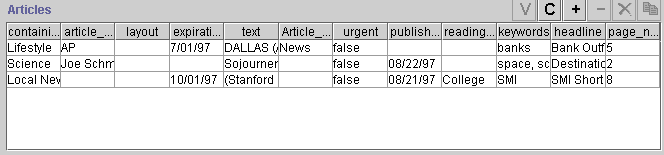

The InstanceRowWidget is an optional widget for slots of type Instance with multiple cardinality (at most not specified or greater than 1). The default widget, InstanceListWidget, shows the names of the Instances that are selected as the values of the slot. The InstanceTableWidget actually shows the slot values for each slot.
The InstanceTableWidget is very similar to the InstanceRowWidget, except that it is available for Instance slots with multiple cardinality. Therefore, instead of just one row, the InstanceTableWidget can display multiple rows of information.

To make an InstanceTableWidget, first select the widget you want to change, then select InstanceTableWidget from the Widget Type Menu.
When you select InstanceTableWidget from the Widget Type Menu, you will usually have to resize the widget.
In addition, you might not wish to use all the slots, and you might want to change the order in which they appear. You can make these changes using the Form Configuration dialog box. Note that the current implementation does not allow you to change the order directly by dragging, but you can reorder the slots by first removing them from the widget, and then adding them back in the order in which you wish them to appear.
To add or remove slots, change their order, or change the name under which they are displayed:
Next: ContainsWidget